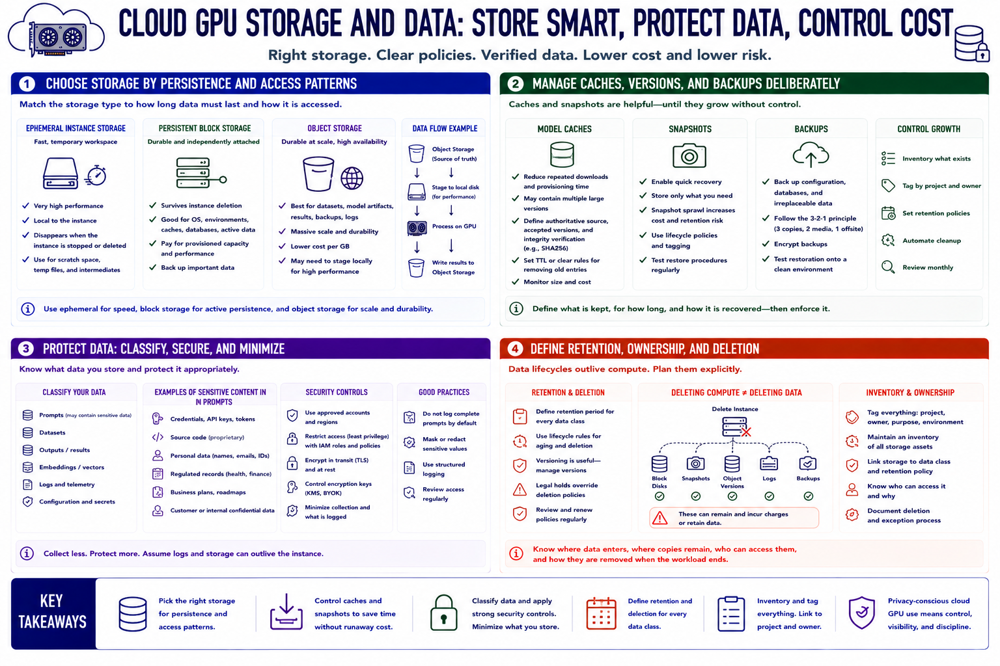

Storage, Data, and Privacy
Connecting to LMS... Progress: in progress

Narration
Choose storage according to persistence and access patterns. An instance's ephemeral disk may provide fast temporary workspace but can disappear when the instance is deleted. Persistent block disks survive independently and are useful for reusable environments, caches, and active data. Object storage supports durable datasets, model artifacts, and results at scale, but applications may need to stage files locally for performance.
Model caches reduce repeated downloads and provisioning time, yet they generate storage charges and may contain multiple large versions. Define which artifacts are authoritative, how their integrity is verified, and when old cache entries are removed. Snapshots simplify recovery, but uncontrolled snapshot growth creates both cost and data-retention risk. Back up configuration and irreplaceable data, then test restoration onto a clean environment.
Classify datasets, prompts, outputs, embeddings, and logs before uploading them. Prompts can contain credentials, source code, personal data, regulated records, or business plans. Select approved accounts and regions, restrict access, encrypt data in transit and at rest, and understand who controls encryption keys. Minimize collection and avoid logging complete prompts by default when operational metrics would suffice.
Define retention and deletion for every data class. Deleting a compute instance does not necessarily delete attached disks, snapshots, object versions, logs, or backups. Conversely, automatic cleanup can destroy required evidence or results if ownership is unclear. Maintain an inventory that links storage to a project and owner. Privacy-conscious cloud GPU use means knowing where data enters, where copies remain, who can access them, and how they are removed at the end of the workload.